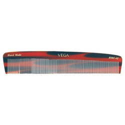

Case Study between Wolfram Programming Language and Mobile net by Tejas U. Desai

Test 1-

Object name: Toothpaste
Wolfram Project Output:
nail polish
Mobile Net Output:
power drill
Test-1 Result: None of the given outputs were right.
Test 2-

Object name: Pillow
Wolfram Project Output:
earthenware
Mobile Net Output:
sarong
Test-2 Result: None of the given outputs were right.
Test 3-

Object name: Comb
Wolfram Project Output:
Lute
Mobile Net Output:
banister,hand rail
Test-3 Result: Both the outputs were wrong but, Mobile net output has more similiarity compared to Wolfram output.
Test 4-